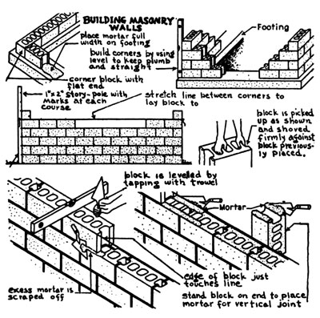
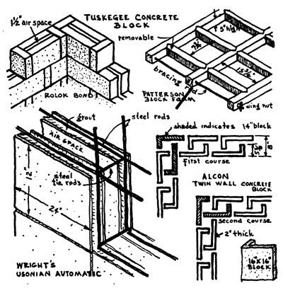
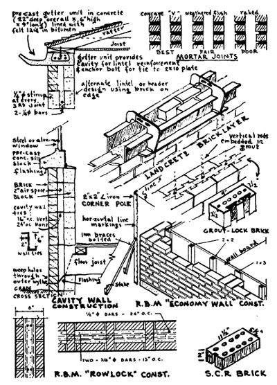

Copyright 1972 by Ken Kern, reprinted by permission.
THE OWNER-BUILT HOME,
VOLUME 2, CHAPTER 4
MASONRY
BLOCK AND BRICK
From 100 to 150 million Asian families live in substandard houses-in crowded, unsanitary hovels. This estimate comes from a mission of the United Nations on Tropical Housing . The basic housing problem of Asian's millions was presented at the opening session of the 1953 United Nations Seminar on Housing and Community Development.
American dwellings are bad enough, but they are mansions compared to what Asians have. It has long been taken for granted in America that the world's masses-the colored people of Asia, Africa, and Latin America-will remain miserably housed. It is taken for granted no longer-especially by the insurgent masses themselves.
Research on housing for underdeveloped areas has begun. In 1954 the National Building Institute, under the auspices of the South African Council for Scientific and Industrial Research, began a research project on low cost housing for the urban Bantu. Its final report, Research Studies on The Costs of Urban Bantu Housing, a thorough piece of work dealing with social, economic and technical factors, establishes certain minimum standards of building performance.
Curiously, this capable research staff chose the familiar brick as the most satisfactory building material to meet basic housing requirements. The reasons for this choice can be appreciated when the nature of the material is understood, and one observes a master brick mason at work. For one thing, the size of the burnt clay brick has remained nearly constant since the manufacture of these building units was taken over from the baking of clay pottery in ancient Egypt. One advantage of small building units is adaptability to practically any design. The size and weight of a brick, moreover, are perfectly scaled to human use. A work rhythm develops as a master brick mason establishes his balance, picking up a brick with one hand and a trowel of mortar with the other.
The brick-on-brick procedure of wall construction, however, is far behind some of the latest monolithic wall-forming methods. Trade organizations like the Portland Cement Association, the Structural Clay Products Institute and the National Concrete Masonry Association were actually the first to anticipate the waning use of individual masonry units. These organizations have spent millions of dollars developing improved masonry units, tools and equipment for speeding block construction, and even more efficient systems of wall construction. As is usually the case in such highly organized projects, very little of this invaluable research has seen the light of day.
The ancient slow brick-on-brick method of construction persists. But where the professional block layer is too routinized to experiment with an unorthodox masonry unit, the amateur owner-builder, with his open mind, can make the experimental approach and profit by it. The purpose of this chapter is to familiarize the owner-builder both with the standard practices of block and brick laying and with some of the new departures in wall construction in and outside of the masonry block industry.
Masonry units have at least one structural advantage over monolithic (e.g., poured concrete) construction; as small units they are, in effect, preshrunk. Less shrinkage-cracking takes place and therefore less temperature reinforcement is required customarily in masonry walls. However, as with any material, the quality of workmanship plays a decisive role in the structural values of the building. Strength and resistance to rain penetration of clay brick walls depend more upon the completeness of bond between mortar and brick than any other single factor. According to laboratory tests at the National Bureau of Standards, partially filled mortar joints result in leaking walls, and reduce the strength of masonry from 50 to 60 percent. All joints in both the backing and facing should be completely filled with mortar as the brick is laid. The key to good brick laying is in generous usage of water. Bricks are highly absorptive, and if laid dry will absorb water from the mortar before the bond has developed. Besides a thorough soaking of the brick a few hours before use, the mortar should be mixed with the maximum amount of water that it is possible to use and still produce a workable mix. Where on the one hand the compressive strength of mortar increases with increased proportions of cement and with decreased water-cement ratio, the tensile bond strength between mortar and brick increases with increased flow of the mortar-the addition of maximum water. However, in most masonry structures strength of mortar is of secondary importance to bond strength, workability, water retentivity and low volume change. In areas where resistance to lateral forces such as earthquakes and high winds is important, the strength of the wall depends primarily upon the strength of the bed joints through which failures normally occur. A good mortar proportion for brick work consists of 2 parts cement, 1 part fire clay or hydrated lime, and 9 parts graded sand
Concrete masonry should be laid with a somewhat drier mortar, and unlike clay brick, the blocks themselves must be kept dry before and during laying in the wall. For ordinary service a mortar proportion of 2 parts cement, 1 part fire clay and 6 parts sand has proven generally satisfactory.
The first course of concrete masonry can be set either directly onto the freshly poured foundation footing or on a bed of mortar above it. In either event one should first accurately set the corner block and adjust all intermediate units to fit both wall-distance and mortar-spacing. This last process is known as "running out the bond." Little difficulty will be encountered if the block sizes conform to the 4-inch module, and if the wall lengths are designed with this "modular coordination" in mind. On this first course the blocks should be carefully checked for correct alignment and plumb. The use of a heavy line (nylon is best) is essential for keeping accurate alignment and level.
After the first course is laid around the perimeter of the house, every inside or outside corner is laid up-usually to four or five courses higher than the center of the wall. As the corner course is laid, it must be checked with a level for alignment, for being plumb and for being level. Furthermore each block should be carefully checked with a level or straightedge to insure that the faces of the block are in the same plane. The use of a storypole, which is simply a board with markings for each course in height, provides accuracy in establishing the top of the masonry for each course.
The next step in building a masonry wall is to lay blocks between the corners. The top-and-outside edges of these "stretcher" blocks are kept in line with a taut string. A little practice in applying mortar and setting blocks will make it possible to set each unit with a minimum of adjustment. It is important to make adjustments for final position while the mortar is soft and plastic. Attempts at adjustment after the mortar has stiffened will most certainly break the mortar bond and allow the penetration of water.
Watertight mortar joints as well as a neat final appearance depend upon proper tooling. This tooling operation compacts the mortar and forces it tightly against the blocks on both sides of the joint. This is best done with a concave or V-shaped tool as soon as the mortar has become "thumbprint hard."
A wide variety of blocks which conform to the 4-inch module are now available-designed to handle just about any conceivable wall problem. Of special value is the "header" block which avoids the former necessity of building wooden bond-beam forms. A block is also available to receive the side flanges of metal window and door frames. Even window-sill blocks are made, thereby eliminating the need for any wood trim in an all-fireproof masonry home.
A large number of masonry block manufacturers now sell the "mortarless" block. In my judgment this block is much more suited to the average owner-builder. It can be laid faster, with less need for skilled labor. As a general rule the mortarless block is more precision-engineered. A variety of joining designs have been developed; tongue-and-groove, ship-lap, ball-and-socket, etc. In practice, one lays the first course in the wet foundation footing around the perimeter of the house. Obviously it is important to get this first layer level, in line and plumb, as the rest of the wall is established by this first course. Blocks are then set layer upon layer until the desired height is attained. No mortar is used and the blocks fit in one position only. When the final height is reached the cores at the corners and on 2-foot centers are poured with concrete.
Another major improvement in the masonry industry occurred when they started making the lightweight block, using cinder, pumice, basalt, "perlite," etc. Insulation and sound absorption qualities are higher, and, with less weight involved, the units can be laid faster.
One would naturally suppose that the value of a building material depends less on appearance than on its structural and insulation values. But modern taste has dictated unreasonably high standards for exterior appearance. In some circles the degree of affectation supersedes the more basic cost and strength considerations. In the 1930's the attractive face-brick was first used extensively as a front wall cover-up, and for a while about every other new house suffered from this "veneereal" disease.
In more recent years the trend has been toward masonry grills and patterned block units. These units are manufactured in practically any color, shape, size, or texture. One can buy "split block," "slump block," or "scored block "-depending upon the desired effect one wishes to achieve. There is also an equally wide range of pattern, depending on how one treats the mortar joint or combines the blocks in any one of a hundred different ways.
In contrast to the growing number of builders who go to such absurd lengths in finding new ways of using concrete masonry for surface effect, an equally strong effort is being made to develop methods whereby houseneedy families may build their own homes out of masonry units produced by themselves-for structure and enclosure rather than "looks." The Tuskegee Institute staff was 15 years in developing a concrete block wall-building system. Said F. D. Patterson, Institute president:
Our experiments in housing have been oriented toward farmers because they have the greatest need in this area for housing improvement, but are least able to provide themselves with the improvement needed through normal commercial arrangements.
Experimentation at Tuskegee Institute has revealed that building costs can be substantially reduced by utilization of labor of the farm family in seasons when there is little demand for labor in farm production. Without specific training and under minimum supervision, unskilled labor in home construction can be performed by members of the family. Short courses have, in a brief period, prepared farmers for satisfactory performance on semi-skilled jobs in home building. In the Tuskegee Institute experiments, reduction in material cost and in labor cost have made possible convenient and attractive homes for farmers with the expenditure of surprisingly small amounts of cash.
Architect Frank Lloyd Wright was one of the first to develop an "improved" concrete block system. His Usonian Automatic has the singular quality of providing a continuous air space between the inner and outer wall. This air space, of course, is invaluable for insulation against heat, cold, and moisture. The Alcon Block is another type of twin-wall construction which successfully incorporates a "motionless" or dead-air space between the outer and inner walls. No direct horizontal contact is made between the blocks. This 16-inch square unit can be produced on the site by the owner-builder, using a simply constructed metal "gang form".
Absence of a continuous air space in conventionally built 8-inch brick walls is perhaps the main reason, construction wise, why this type of wall is becoming less prevalent. Experience has shown that in instances where the brick header is continuous through the full thickness of the wall, extreme care must be exercised in construction in order to obtain a wall that will resist the penetration of heavy rains accompanied by high winds. Concrete block or structural clay tile is usually used to "back-up" the clay brick facing. As is often the case where different materials are used (concrete and burnt clay in this instance) the thermal and moisture expansion coefficients of facing and back-up are different. Movement of the concrete block back-up, due to shrinkage as the wall dries out, creates an eccentric load on the brick headers which tends to rupture the bond between headers and mortar at the external wall face.
The logical solution to this problem of moisture penetration and poor insulation is to separate the inner from the outer wall. The Cavity Wall has been used in England for fifty years or more, but has only recently gained favor in this country. New York's nineteen story Veterans' Hospital is claimed to be the highest cavity wall structure in existence. The wall consists of an outer layer of facing brick and an inner layer of concrete block, with a 2-inch continuous air space between. The two layers are tied together by "Z" ties spaced 16 inches apart vertically and 24 inches horizontally. The cavity is drained to the outside by weep holes.
Where resistance to heat flow in addition to that provided by the air space is required, insulating material can be installed directly into the cavity. The wall then has the double advantage of the lower heat gain typical of clay products and a high resistance to heat flow due to the cavity stuffing. According to tests at the Armour Research Foundation and Pennsylvania State College, the pouring-type insulation (SCR) produced by Owens-Coming Fiberglass proved superior to all other varieties.
Cheaply built brick buildings suffered perhaps the greatest structural devastation in the 1933 Long Beach (California) earthquake. The human misery and financial loss at this time prodded the masonry industry to find safer and stronger ways of budding with brick. So now we have two new methods of brick construction: Reinforced Brick Masonry and Reinforced Grouted Brick Masonry. For a wall height of 20 feet, an un-reinforced thickness would have to be 12 inches whereas the reinforced thickness can be reduced to 8 inches. That is, the un-reinforced wall requires 50% more brick and 50% more weight must be carried by the supporting structure. A brick or block wall reinforced every foot in height with Dur-O-Wall steel masonry wall reinforcement (Box 628, Syracuse, N.Y.) has 71% greater flexural strength than its un-reinforced counterpart.
Along with the many varieties of fabricated metal reinforcements, specially designed brick (like the Grout Lock and SCR) are now manufactured for those who want to insure maximum bond with reinforced grout or with the mortar bed. Actually the same structural results can be achieved using common brick and standard-size reinforcing bars. The Rowlock system of reinforced brick masonry, for instance, offers substantial savings in speed of erection and amount of material. Perhaps the most dramatic use of this system of construction is in the Lunt-Lake Apartment building in Chicago. Walls of the first story are only 10 inches thick and the remaining eight stories are 8 inches thick! This remarkable strength per thickness of wall is achieved despite the fact that all the brick are laid on edge-a pattern typical to Rowlock bond. One of the developers of Rowlock, Henry Holsman, writes in the June 1949 issue of Brick and Clay Record:
If brick masons and manufacturers will adopt and promote this type of reinforced brick construction, it will put the mason and the brick industry on an equal competitive footing with other methods of building construction, if not far in advance of them. In my judgment it can be developed so as to make the concrete skeleton method of construction quite obsolete. To abolish the temporary forming in building construction, which sometimes and quite often costs as much as or more than the structure itself, will be a great economical boon to the general public who, after all, must pay the extra cost of any inefficient or unnecessary method of building construction.
Perhaps the lowest cost of all brick wall construction methods (appropriately termed "economy wall") was developed for the Lee County (Tupelo, Miss.) Housing Authority during the second war. The wall construction consists of nothing more than a 4-inch brick wall built on a reinforced brick grade beam which in turn is supported by 8 inch by 16 inch brick piers. The contractor's building cost of $1,538 for each two-bedroom unit was lower than competing bids using frame construction. This type of construction well illustrates the fact that, from a design standpoint, the outside layer of a brick masonry wall should not function as a mere skin or covering; it should serve as part of the structure as well. This is a fundamental quality which should be insisted upon in the choice of any building material. "Finish" should be an active load-carrying participant rather than a passive or useless veneer.
The final stage of any masonry construction involves the cleanup of random smears of mortar or traces of the white efflorescence that often appears on fresh brickwork. It is best to wait a few weeks after the last brick is laid before applying the 10% solution of muriatic acid. A stiff brush or rag is best for applying the acid to the wall. A thorough wash-down with water should precede and follow the acid treatment. This will be about the last thing that need ever be done to the owner-built masonry home, at least during his own lifetime. There is a real comfort in knowing that one's masonry home has pleasing appearance and structural durability. Good insulation and fireproofing, from a material which is relatively cheap and convenient, are features that help to make a masonry home a definite candidate for selection by the amateur owner-builder.
BIBLIOGRAPHY (books listed in order of importance)
Reinforced Brick Masonry: Plummer and Blume, Structural Clay Products Inst., Washington, D. C.
Modern Masonry: Building Research Institute, National Research Council.
The Masonry House: Frankl.
Cavity and Solid Metal Tied Walls: Technical Notes, June 1956, Structural Clay Products Inst., Washington, D. C.
Project A-62 for Coordination of Dimensions of Building Materials and Equipment:
American Standards Assn., 29 W. 39th St., New York, N.Y. Housing the Urban Bantu:
National Building Institute, Pretoria, South Africa.
Structural Properties of Six Masonry Wall Constructions: Report BMS-5, National Bureau of Standards, Washington, D. C.
Concrete Building Units: Simplified Practice Recommendations R-32-38, U. S. Dept. of Commerce, Washington, D. C.
|
 |
 |
 |